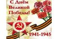
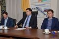

Поздравление филиала ПАО «МРСК Юга» - «Калмэнерго» с 55-летием образования Калмыцких электрических сетей
Поздравление филиала ПАО «МРСК Юга» - «Калмэнерго» с 55-летием образования Калмыцких электрических сетей
30.04.2019
Уважаемый Тимур Улюмджиевич! От имени Астраханской областной организации Общественной организации... Подробнее
 Поздравление ветерана Астраханской энергетики с Юбилеем
Поздравление ветерана Астраханской энергетики с Юбилеем
30.04.2019
Уважаемый Николай Мефодьевич! Примите самые искренние поздравления по случаю Вашего юбилея! Без... Подробнее
 Астраханский парад зонтиков под флагом Электропрофсоюза или как в Астрахани встретили Первомай
Астраханский парад зонтиков под флагом Электропрофсоюза или как в Астрахани встретили Первомай
05.05.2015
Астраханские энергетики из числа сотрудников филиала ОАО «МРСК Юга», учебного комбината, энергосбытовой... Подробнее
 В Астраханской территориальной профсоюзной организации прошла отчетно-выборная конференция
В Астраханской территориальной профсоюзной организации прошла отчетно-выборная конференция
15.12.2014
В минувшую пятницу, 12 декабря 2014 года, в Астрахани прошла очередная отчетно-выборная конференция... Подробнее
 Развитие молодежной Политики МРСК Юга – залог светлого будущего Компании
Развитие молодежной Политики МРСК Юга – залог светлого будущего Компании
16.12.2013
Совет молодых специалистов ОАО «МРСК Юга» отметил три года своего образования. Подводя итоги деятельности,... Подробнее
 Астраханские энергетики вносят свой вклад в разработку Стандартов достойного труда
Астраханские энергетики вносят свой вклад в разработку Стандартов достойного труда
23.10.2012
Председатель Астраханской территориальной профсоюзной организации Общественного объединения... Подробнее
 Астраханские энергетики приняли участие во всероссийском конкурсе «Молодой профлидер-2012»
Астраханские энергетики приняли участие во всероссийском конкурсе «Молодой профлидер-2012»
11.07.2012
Активисты Молодежного совета Астраханской территориальной профсоюзной организации «Всероссийский... Подробнее
 Спорт, как образ жизни
Спорт, как образ жизни
12.03.2012
Энергетики Астраханской территориальной профсоюзной организации Общественного объединения... Подробнее
 Астраханские энергетики «За достойный труд»
Астраханские энергетики «За достойный труд»
10.10.2011
Астраханская областная профсоюзная организации Общественного объединения «Всероссийский... Подробнее
 Астраханский «Электропрофсоюз» дарит подарки будущим первоклассникам
Астраханский «Электропрофсоюз» дарит подарки будущим первоклассникам
08.08.2011
Более восьмидесяти детей членов Астраханской территориальной профсоюзной организации Общественного... Подробнее
 Электропрофсоюз организовал семейные выходные для астраханских энергетиков
Электропрофсоюз организовал семейные выходные для астраханских энергетиков
16.07.2011
Более 160 энергетиков, среди которых большинство – это члены Астраханской территориальной профсоюзной... Подробнее
 Председатель Астраханского Электропрофсоюза пообщался с журналистами
Председатель Астраханского Электропрофсоюза пообщался с журналистами
29.04.2011
Председатель Астраханской территориальной профсоюзной организации Общественного объединения... Подробнее
 Астраханская территориальная профсоюзная организация общественного объединения «Всероссийский Электропрофсоюз» укрепляет взаимодействие с ОАО «МРСК Юга»
Астраханская территориальная профсоюзная организация общественного объединения «Всероссийский Электропрофсоюз» укрепляет взаимодействие с ОАО «МРСК Юга»
12.04.2011
На днях в филиале ОАО «МРСК Юга» - «Астраханьэнерго» состоялась рабочая встреча представителей... Подробнее
 Руководитель Астраханской территориальной профсоюзной организации «Всероссийский Электропрофсоюз» встретился с губернатором
Руководитель Астраханской территориальной профсоюзной организации «Всероссийский Электропрофсоюз» встретился с губернатором
24.03.2011
Председатель Астраханской территориальной профсоюзной организации «Всероссийский Электропрофсоюз»... Подробнее
 В филиале ОАО «МРСК Юга» – «Астраханьэнерго» состоялось очередное заседание профсоюзного комитета
В филиале ОАО «МРСК Юга» – «Астраханьэнерго» состоялось очередное заседание профсоюзного комитета
16.03.2011
В астраханском филиале ОАО «МРСК Юга» состоялось заседание профсоюзного комитета первичной... Подробнее
 С Днем Великой Победы!
08.05.2019
Уважаемые коллеги! Дорогие ветераны!!! От всей души поздравляем Вас с Днем Победы!!! Золотыми буквами навечно... Подробнее
08.05.2019
Уважаемые коллеги! Дорогие ветераны!!! От всей души поздравляем Вас с Днем Победы!!! Золотыми буквами навечно... Подробнее
С Праздником Весны и Труда!
01.05.2019
Уважаемые коллеги! Дорогие друзья! Примите искренние поздравления с праздником Первомая! С Праздником Весны... Подробнее
01.05.2019
Уважаемые коллеги! Дорогие друзья! Примите искренние поздравления с праздником Первомая! С Праздником Весны... Подробнее
30.04.2019
Уважаемый Тимур Улюмджиевич! От имени Астраханской областной организации Общественной организации... Подробнее
Поздравление ветерана Астраханской энергетики с Юбилеем 30.04.2019
Уважаемый Николай Мефодьевич! Примите самые искренние поздравления по случаю Вашего юбилея! Без... Подробнее


Астраханские энергетики приняли участие в шествии «Бессмертного полка»
09.05.2016
Более сотни сотрудников астраханских энергокомпаний, входящих в Астраханскую территориальную профсоюзную... Подробнее
09.05.2016
Более сотни сотрудников астраханских энергокомпаний, входящих в Астраханскую территориальную профсоюзную... Подробнее
Астраханские энергетики приняли участие в Первомайском митинге
01.05.2016
Сотрудники астраханских энергокомпаний, входящих в Астраханскую территориальную профсоюзную организацию... Подробнее
01.05.2016
Сотрудники астраханских энергокомпаний, входящих в Астраханскую территориальную профсоюзную организацию... Подробнее
В Астрахань пришла чистая весна
25.04.2016
Сотрудники астраханских энергокомпаний, входящих в Астраханскую территориальную профсоюзную организацию... Подробнее
25.04.2016
Сотрудники астраханских энергокомпаний, входящих в Астраханскую территориальную профсоюзную организацию... Подробнее
Энергетики поддерживают детей-сирот
10.03.2016
Астраханские энергетики организовали благотворительные ярмарки, на которых воспитанники подшефной... Подробнее
10.03.2016
Астраханские энергетики организовали благотворительные ярмарки, на которых воспитанники подшефной... Подробнее
Астраханские энергетики не забывают ветеранов
01.03.2016
Руководство астраханского филиала МРСК Юга вместе с профсоюзной организацией и Советом ветеранов... Подробнее
01.03.2016
Руководство астраханского филиала МРСК Юга вместе с профсоюзной организацией и Советом ветеранов... Подробнее
Музей астраханской энергетики встречает первых посетителей
28.01.2016
В МРСК Юга (входит в группу компаний «Россети») прошла экскурсия в музей астраханской энергетики для... Подробнее
28.01.2016
В МРСК Юга (входит в группу компаний «Россети») прошла экскурсия в музей астраханской энергетики для... Подробнее
Председатель Астраханского Электропрофсоюза поздравил с Юбилеем представителя одной из энергетических династий
14.10.2015
На днях 55-летие отметила инженер отдела учета электроэнергии управления реализации услуг астраханского... Подробнее
14.10.2015
На днях 55-летие отметила инженер отдела учета электроэнергии управления реализации услуг астраханского... Подробнее
Обращение Федерации Независимых Профсоюзов России
23.09.2015
Обращение Федерации Независимых Профсоюзов России Президенту Российской Федерации, Правительству... Подробнее
23.09.2015
Обращение Федерации Независимых Профсоюзов России Президенту Российской Федерации, Правительству... Подробнее
Астраханский парад зонтиков под флагом Электропрофсоюза или как в Астрахани встретили Первомай 05.05.2015
Астраханские энергетики из числа сотрудников филиала ОАО «МРСК Юга», учебного комбината, энергосбытовой... Подробнее
Астраханские энергетики выбрали «Мистера энергия -2015»
23.02.2015
Традиционный конкурс, посвященный Дню защитника Отечества, прошел в Астраханской школе-интернате №2 для... Подробнее
23.02.2015
Традиционный конкурс, посвященный Дню защитника Отечества, прошел в Астраханской школе-интернате №2 для... Подробнее
Профессия электромонтер в Астраханской области признана лучшей в 2014 году
30.01.2015
В Астрахани прошел региональный конкурс «Молодой специалист 2014». В нем приняли участие сотрудники... Подробнее
30.01.2015
В Астрахани прошел региональный конкурс «Молодой специалист 2014». В нем приняли участие сотрудники... Подробнее
В Астраханской территориальной профсоюзной организации прошла отчетно-выборная конференция 15.12.2014
В минувшую пятницу, 12 декабря 2014 года, в Астрахани прошла очередная отчетно-выборная конференция... Подробнее
В астраханских «Первичках» прошли профсоюзные конференции
06.12.2014
Во всех первичных профсоюзных организациях, входящих в состав Астраханской территориальной (областной)... Подробнее
06.12.2014
Во всех первичных профсоюзных организациях, входящих в состав Астраханской территориальной (областной)... Подробнее
 Молодые энергетики обсудили новые проекты с министром промышленности транспорта и природных ресурсов Астраханской области Сергеем Кржановским
05.12.2014
Недавно прошло очередное заседание Совета молодых специалистов министерства промышленности, транспорта и... Подробнее
05.12.2014
Недавно прошло очередное заседание Совета молодых специалистов министерства промышленности, транспорта и... Подробнее
Май, спорт и уха!
12.05.2014
Астраханские энергетики активно отметили майские праздники. Объединил всех Электропрофсоюз, а спорт и... Подробнее
12.05.2014
Астраханские энергетики активно отметили майские праздники. Объединил всех Электропрофсоюз, а спорт и... Подробнее
Энергетики Астраханской области приняли участие в Первомайской демонстрации
05.05.2014
В честь Дня весны и труда сотрудники крупнейших энергокомпаний Астраханской области под флагом... Подробнее
05.05.2014
В честь Дня весны и труда сотрудники крупнейших энергокомпаний Астраханской области под флагом... Подробнее
Астраханские энергетики внесли свой вклад в благоустройство Каспийской столицы
14.04.2014
Энергетики крупнейших энергокомпаний Астраханской области поддержали призыв губернатора и приняли... Подробнее
14.04.2014
Энергетики крупнейших энергокомпаний Астраханской области поддержали призыв губернатора и приняли... Подробнее
Энергетики способствуют популяризации инженерно-технических профессий среди молодежи
14.03.2014
Сотрудники крупнейших энергопредприятий Астраханской области, входящие в Совет молодых специалистов... Подробнее
14.03.2014
Сотрудники крупнейших энергопредприятий Астраханской области, входящие в Совет молодых специалистов... Подробнее
Астраханские профсоюзы в поддержку Крыма
11.03.2014
Астраханская территориальная профсоюзная организация Общественной организации «Всероссийский... Подробнее
11.03.2014
Астраханская территориальная профсоюзная организация Общественной организации «Всероссийский... Подробнее
Молодые специалисты крупнейших промышленных предприятий Астраханской области выработали общую стратегию сотрудничества
26.02.2014
На днях состоялось первое в этом году заседание Совета молодых специалистов министерства промышленности,... Подробнее
26.02.2014
На днях состоялось первое в этом году заседание Совета молодых специалистов министерства промышленности,... Подробнее
Астраханские энергетики поздравили детей-сирот с Днем защитника Отечества
24.02.2014
Члены Молодежного совета первичной профсоюзной организации «Астраханьэнерго», входящей в состав... Подробнее
24.02.2014
Члены Молодежного совета первичной профсоюзной организации «Астраханьэнерго», входящей в состав... Подробнее
Развитие молодежной Политики МРСК Юга – залог светлого будущего Компании 16.12.2013
Совет молодых специалистов ОАО «МРСК Юга» отметил три года своего образования. Подводя итоги деятельности,... Подробнее
Активный отдых, как способ общения
12.12.2013
Совет молодых специалистов МРСК Юга вместе с молодежным Советом Астраханской территориальной профсоюзной... Подробнее
12.12.2013
Совет молодых специалистов МРСК Юга вместе с молодежным Советом Астраханской территориальной профсоюзной... Подробнее
Астраханские энергетики совершили «путешествие» в историю
25.10.2013
Руководство ОАО «МРСК Юга» в Астраханской области при участии первичной профсоюзной организации... Подробнее
25.10.2013
Руководство ОАО «МРСК Юга» в Астраханской области при участии первичной профсоюзной организации... Подробнее
Астраханские энергетики поздравили детей-сирот с Днем знаний
06.09.2013
В День знаний члены Молодежного совета Астраханской территориальной профсоюзной организации... Подробнее
06.09.2013
В День знаний члены Молодежного совета Астраханской территориальной профсоюзной организации... Подробнее
Астраханская делегация приняла участие в III Межрегиональном молодежном форуме ОАО «МРСК Юга»
05.06.2013
В шахматной столице России – в Элисте прошел III Межрегиональный молодежный форум ОАО «МРСК Юга».... Подробнее
05.06.2013
В шахматной столице России – в Элисте прошел III Межрегиональный молодежный форум ОАО «МРСК Юга».... Подробнее
Конструктивный диалог с работодателем – гарантия социальной стабильности в коллективе
16.04.2013
Итоги работы в 2012 году и планы на 2013 год обсуждались на заседании комитета крупнейшей первичной... Подробнее
16.04.2013
Итоги работы в 2012 году и планы на 2013 год обсуждались на заседании комитета крупнейшей первичной... Подробнее
Профсоюзный лидер филиала ОАО «МРСК Юга» – «Астраханьэнерго» отмечен наградой Всероссийского Электропрофсоюза
13.02.2013
Сотрудник филиала ОАО «МРСК Юга» – «Астраханьэнерго», председатель первичной профсоюзной организации... Подробнее
13.02.2013
Сотрудник филиала ОАО «МРСК Юга» – «Астраханьэнерго», председатель первичной профсоюзной организации... Подробнее
Астраханские энергетики вносят свой вклад в разработку Стандартов достойного труда 23.10.2012
Председатель Астраханской территориальной профсоюзной организации Общественного объединения... Подробнее
Председатель Молодежного Совета Астраханского «Электропрофсоюза» победителем регионального этапа Всероссийского молодежного конкурса «Профсоюзный лидер – 2012»
20.07.2012
Председатель Молодежного Совета Астраханской территориальной профсоюзной организации Общественного... Подробнее
20.07.2012
Председатель Молодежного Совета Астраханской территориальной профсоюзной организации Общественного... Подробнее
11.07.2012
Активисты Молодежного совета Астраханской территориальной профсоюзной организации «Всероссийский... Подробнее
Молодые энергетики стали командой
18.06.2012
В минувшие выходные в Астрахани молодые энергетики Юга соревновались в сноровке и умении работать в команде... Подробнее
18.06.2012
В минувшие выходные в Астрахани молодые энергетики Юга соревновались в сноровке и умении работать в команде... Подробнее
Астраханские энергетики вместе с коллегами «Калмэнерго» почтили память героев войны 28 армии в Хулхуте
14.05.2012
Молодежный совет Астраханской территориальной профсоюзной организации во главе с председателем Евгением... Подробнее
14.05.2012
Молодежный совет Астраханской территориальной профсоюзной организации во главе с председателем Евгением... Подробнее
Электропрофсоюз – за сохранение энергии леса!
24.04.2012
Около 1000 членов Астраханской территориальной профсоюзной организации Общественного объединения... Подробнее
24.04.2012
Около 1000 членов Астраханской территориальной профсоюзной организации Общественного объединения... Подробнее
Астраханские энергетики выступили в защиту законно избранного мэра города
16.04.2012
Энергетики Астраханской территориальной профсоюзной организации Общественного объединения... Подробнее
16.04.2012
Энергетики Астраханской территориальной профсоюзной организации Общественного объединения... Подробнее
Спорт, как образ жизни 12.03.2012
Энергетики Астраханской территориальной профсоюзной организации Общественного объединения... Подробнее
Молодые активисты Астраханского «Электропрофсоюза» приняли участие в городском молодежном форуме
06.03.2012
В Астрахани завершился молодежный форум «Поколение 21 века». Его организатором выступила мэрия Астрахани. В... Подробнее
06.03.2012
В Астрахани завершился молодежный форум «Поколение 21 века». Его организатором выступила мэрия Астрахани. В... Подробнее
Астраханская территориальная профсоюзная организации «Всероссийский Электропрофсоюз» налаживает взаимодействие с региональной властью
01.02.2012
Председатель Астраханской территориальной профсоюзной организации «Всероссийский Электропрофсоюз»... Подробнее
01.02.2012
Председатель Астраханской территориальной профсоюзной организации «Всероссийский Электропрофсоюз»... Подробнее
Молодые энергетики приняли участие в заседании областного молодежного Совета профсоюзов
31.01.2012
Активисты Молодежного Совета Астраханской территориальной профсоюзной организации приняли участие в... Подробнее
31.01.2012
Активисты Молодежного Совета Астраханской территориальной профсоюзной организации приняли участие в... Подробнее
Астраханские энергетики подарили Новогоднюю сказку детям-сиротам
16.01.2012
Астраханские энергетики поздравили с Новым годом и Рождеством детей-сирот и детей, оставшихся без попечения... Подробнее
16.01.2012
Астраханские энергетики поздравили с Новым годом и Рождеством детей-сирот и детей, оставшихся без попечения... Подробнее
Энергетики приняли участие в Астраханском молодежном профсоюзном форуме
20.10.2011
Члены Молодежного Совета Астраханской территориальной профсоюзной организации Общественного Объединения... Подробнее
20.10.2011
Члены Молодежного Совета Астраханской территориальной профсоюзной организации Общественного Объединения... Подробнее
10.10.2011
Астраханская областная профсоюзная организации Общественного объединения «Всероссийский... Подробнее
Руководство Астраханского «Электропрофсоюза» приняло участие в торжественной церемонии открытия диспетчерского центра астраханского филиала РДУ СО «ЕЭС»
14.09.2011
Председатель Астраханской территориальной профсоюзной организации Общественного объединения... Подробнее
14.09.2011
Председатель Астраханской территориальной профсоюзной организации Общественного объединения... Подробнее
«Электропрофсоюз» помогает подшефному интернату
08.08.2011
Молодежный Совет первичной профсоюзной организации «Астраханьэнерго» Астраханской территориальной... Подробнее
08.08.2011
Молодежный Совет первичной профсоюзной организации «Астраханьэнерго» Астраханской территориальной... Подробнее
08.08.2011
Более восьмидесяти детей членов Астраханской территориальной профсоюзной организации Общественного... Подробнее
Электропрофсоюз укрепляет командный дух
25.07.2011
В минувшие выходные Молодежный совет астраханской территориальной общественной организации... Подробнее
25.07.2011
В минувшие выходные Молодежный совет астраханской территориальной общественной организации... Подробнее
16.07.2011
Более 160 энергетиков, среди которых большинство – это члены Астраханской территориальной профсоюзной... Подробнее
Астраханский «Электропрофсоюз» помогает оздоравливать детей
14.07.2011
В рамках социального партнерства Астраханская территориальной профсоюзная организация Общественного... Подробнее
14.07.2011
В рамках социального партнерства Астраханская территориальной профсоюзная организация Общественного... Подробнее
Астраханские энергетики зажгли свечу памяти
23.06.2011
Активисты Молодежного совета Астраханской территориальной профсоюзной организации общественного... Подробнее
23.06.2011
Активисты Молодежного совета Астраханской территориальной профсоюзной организации общественного... Подробнее
Электропрофсоюз: сделаем детей счастливыми
07.06.2011
В Астраханской областной профсоюзной организации общественного объединения «Всероссийский... Подробнее
07.06.2011
В Астраханской областной профсоюзной организации общественного объединения «Всероссийский... Подробнее
Астраханские энергетики зажгли свечу памяти
10.05.2011
Активисты Молодежного совета Астраханской территориальной профсоюзной организации общественного... Подробнее
10.05.2011
Активисты Молодежного совета Астраханской территориальной профсоюзной организации общественного... Подробнее
Астраханские энергетики отметили Первомай
03.05.2011
Астраханские энергетики отметили Первомай Более двухсот членов Астраханской территориальной организации... Подробнее
03.05.2011
Астраханские энергетики отметили Первомай Более двухсот членов Астраханской территориальной организации... Подробнее
В Астрахани прошло заседание молодежного Совета профсоюзов
29.04.2011
На днях состоялось очередное заседание Молодежного Совета Астраханского областного объединения... Подробнее
29.04.2011
На днях состоялось очередное заседание Молодежного Совета Астраханского областного объединения... Подробнее
Председатель Астраханского Электропрофсоюза пообщался с журналистами 29.04.2011
Председатель Астраханской территориальной профсоюзной организации Общественного объединения... Подробнее
Подарим детям частичку своей души
19.04.2011
Первичная профсоюзная организация «Астраханьэнерго» Астраханской территориальной профсоюзной... Подробнее
19.04.2011
Первичная профсоюзная организация «Астраханьэнерго» Астраханской территориальной профсоюзной... Подробнее
Электропрофсоюз – за сохранение энергии леса!
19.04.2011
Астраханская территориальная профсоюзная организация Общественного объединения «Всероссийский... Подробнее
19.04.2011
Астраханская территориальная профсоюзная организация Общественного объединения «Всероссийский... Подробнее
12.04.2011
На днях в филиале ОАО «МРСК Юга» - «Астраханьэнерго» состоялась рабочая встреча представителей... Подробнее
24.03.2011
Председатель Астраханской территориальной профсоюзной организации «Всероссийский Электропрофсоюз»... Подробнее
16.03.2011
В астраханском филиале ОАО «МРСК Юга» состоялось заседание профсоюзного комитета первичной... Подробнее